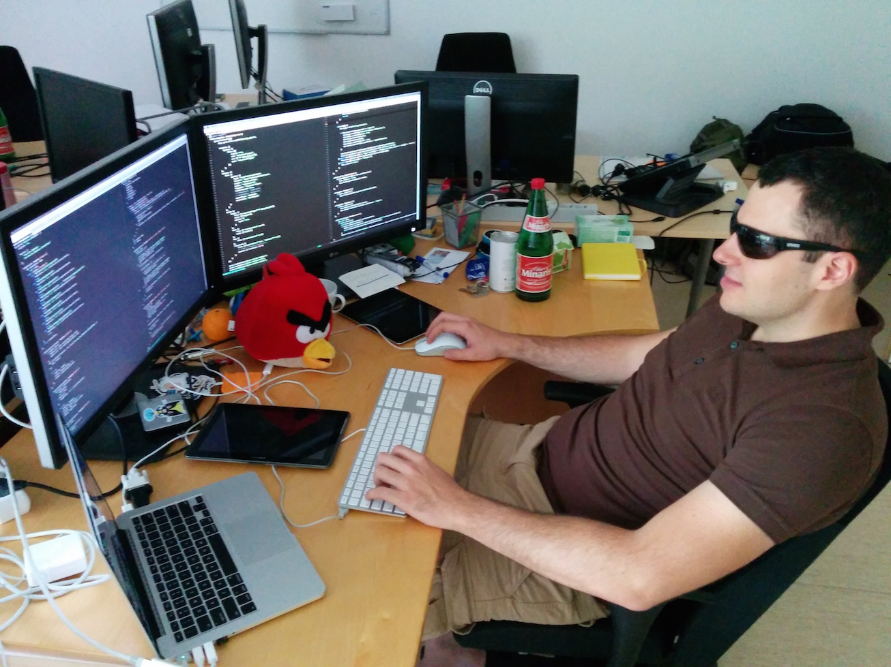

Spock
Mario Zupan - @mzupzup
About me

- @netconomy for 4 years
- ~2.5 years of Java
- ~1.5 years of JavaScript
- Software Craftsmanship
Agenda
- Overview of Spock's Capabilities
- Code-Examples
- How to use it
- Impulse to try it
Spock
Spock Facts
- around since 2008
- 1.0 just got released
- created by an Austrian (@pniederw)
- It uses Groovy!
- Simple
- Syntactic Sugar
- Functional Features
- List / Map Literals
- ...
Spock Features
- Learning Curve
- Unrolling
- Data-Driven Testing
- Interaction Based Testing
- Framework Integration
- DSL
Thank You